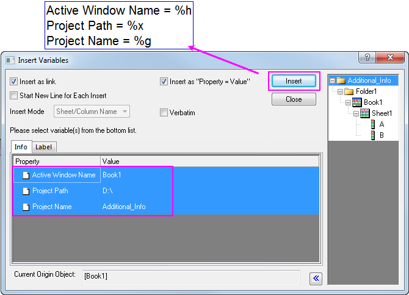
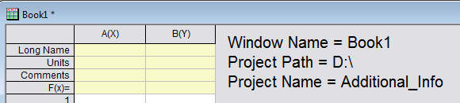

FAQ-728 Wie füge ich Informationsvariablen wie den aktuellen Projektnamen/-pfad oder den Namen des aktiven Fensters in das Diagramm/Arbeitsblatt ein?
Project-Additional-Information
Letztes Update: 03.08.2015
Sie können zusätzliche Informationsvariablen einfügen: Name des aktiven Fensters, Projektpfad und Projektname, wie auf der Registerkarte Info angezeigt, wenn der übergeordnete Ordner im rechten Bedienfeld des Dialogs Variablen einfügen ausgewählt ist.
Informationsvariablen zu Textobjekt hinzufügen
- Aktivieren Sie die Arbeitsmappe oder das Diagrammfenster und fügen Sie das Textobjekt mit Hilfe von Text einfügen
 hinzu.
hinzu.
- Klicken Sie doppelt auf das Textobjekt, um es bearbeitbar zu machen. Klicken Sie mit der rechten Maustaste und wählen Sie Infovariable einfügen, um den Dialog Variablen einfügen zu öffnen. Wählen Sie die gewünschte(n) Infovariable(n) im linken Bedienfeld, wenn der übergeordnete Ordner im rechten Bedienfeld ausgewählt ist, klicken Sie auf Einfügen, um die Info in das Textobjekt einzufügen.

- Klicken Sie auf eine beliebige Stelle, um den direkten Bearbeitungsmodus zu verlassen. Der hinzugefügte Inhalt wird auf ähnliche Weise angezeigt:

- Wenn die Informationsvariable geändert wurde, können Sie das Fenster aktivieren und F5 drücken, um de Informationen in dem Textobjekt zu aktualisieren.
 |
Um mehrere Infovariablen in mehrere Zeilen einzufügen, stellen Sie sicher, dass das Kontrollkästchen Neue Zeile für jeden eingefügten Wert vor jeder Eingabe aktiviert ist.
|
Informationsvariable in Arbeitsblattzelle einfügen
Aktivieren Sie die Spalte, wählen Sie Spalte: Spaltenwerte errechnen, um den Dialog Werte setzen zu wählen, und klicken Sie auf Variablen: Infovariable einfügen, um den Dialog Variablen einfügen zu öffnen. Sie können dann die Schritte 2 und 3 aus dem obenstehenden Abschnitt befolgen, um die Informationsvariable in die Zelle einzufügen.
Schlüsselwörter:Text einfügen, Werte setzen, Infovariable